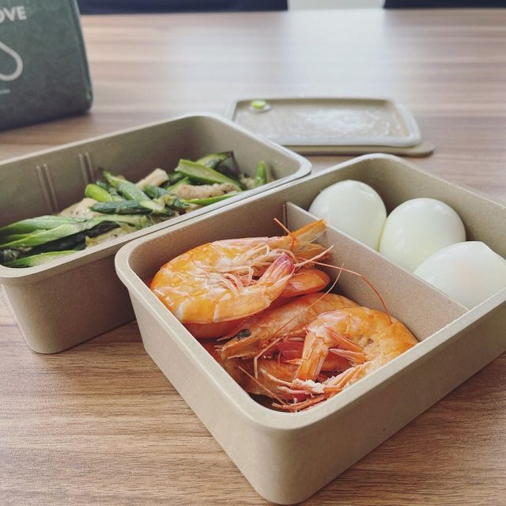
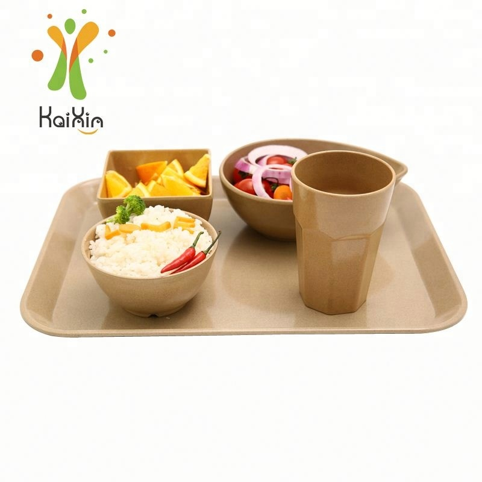

Plastic-Free Hospitality in the UK: The Rules, the Fees and What Importers Should Stock
The UK did not get here with a single dramatic law. It got here in layers: a ban on the most littered single-use plastic items, a new duty on every workplace to separate its waste, and a per-tonne fee on packaging that producers now pay directly. For anyone who imports or distributes tableware into the UK market, those three layers add up to one clear message — the cheapest option in British food service is no longer the disposable one. Here is what actually changed, what it costs, and what UK buyers are asking suppliers to quote in 2026.

Reusable plant fiber tableware — built for the daily knocks of café and canteen service.
The Ban That Started It: England, October 2023
Since 1 October 2023, no business in England — whether a retailer, a takeaway, a food vendor or part of the hospitality industry — may supply single-use plastic cutlery, balloon sticks, or expanded and extruded polystyrene cups and food containers. The supply of single-use plastic plates, trays and bowls to end users is restricted on the same basis. These are not voluntary guidelines; breaching them is an offence, enforced by Trading Standards under a civil sanctions regime that includes fixed monetary penalties and stop notices.
The government's own impact figures explain why the rules exist: England was estimated to use about 2.7 billion items of single-use cutlery and 721 million single-use plates a year, with roughly a tenth of that material being recycled. If you supply tableware into the UK, that is the demand signal. A very large slice of the disposables market was legislated out of existence in one step, and it is not coming back.
There is one important carve-out worth understanding, because it trips people up. Plastic plates, trays and bowls that function as packaging for shelf-ready, pre-packaged food — a pre-filled salad bowl, for instance, or a bowl filled at a takeaway counter — were not caught by the ban. Instead they sit inside the packaging regime described further down. The distinction matters when you are advising a customer on which of their product lines needs replacing and which simply needs re-costing.
The Line Buyers Keep Missing: Single-Use vs Reusable
Notice what the regulations target: single-use plastic. Reusable tableware sits in a different product category and is not the subject of these restrictions. That sounds like a technicality. In practice it reshapes the buying conversation.
A UK café or hotel that has just removed disposable plastic plates has two directions to go. It can switch to a compliant single-use material and keep buying forever — same recurring line item, different label. Or it can move to reusable dinnerware and delete the recurring line item altogether. The second option used to be dismissed on cost. With packaging fees rising on a per-tonne basis and a legal duty to separate waste in every workplace, the arithmetic has shifted. Buyers who run the numbers over a year of daily service increasingly arrive at reusables, and they arrive at a supplier asking a different question than before: not "what is your cheapest plate" but "what survives two years of daily commercial service".

Hotel buffets, staff canteens and contract caterers are the fastest-moving reusable categories in the UK.
Simpler Recycling Puts a Cost on Mixed Waste
The second layer is not about materials at all — it is about waste handling. Under England's Simpler Recycling rules, from 31 March 2025 every workplace and non-domestic premises with ten or more full-time equivalent employees must separate dry recyclables — glass, metal, plastic, paper and card — from food waste and from residual waste before collection. Food waste must be separated regardless of how little of it a site generates. Micro-firms with fewer than ten full-time equivalent staff have until 31 March 2027 to comply.
This applies across the board: offices, retailers, manufacturers, schools, hospitals, care homes and, of course, hospitality businesses such as cafés, restaurants and hotels, including their staff kitchens. Non-compliance risks a compliance notice from the Environment Agency, and failing to comply with a notice can lead to prosecution and fines.
Why should a tableware supplier care? Because mixed, contaminated single-use packaging is exactly the waste stream these rules exist to shrink. Reusable dinnerware removes that volume from the workflow: it goes to the dishwasher, not the bin — and for a buyer trying to pass an audit, that argument lands.
Packaging EPR: The Per-Tonne Fee Reaching Your Customer
The third layer is money, and it is the layer most likely to change what your customer orders. The UK's extended producer responsibility scheme for packaging — administered by PackUK across all four nations — makes the businesses that place packaging on the market pay for collecting, sorting and recycling it. Large producers (annual turnover above £2 million and more than 50 tonnes of packaging supplied or imported) must register, report packaging data twice a year and pay waste disposal fees. Smaller producers above £1 million turnover handling 25 to 50 tonnes must register and report, but do not currently pay the full disposal fees.
Fees are charged by weight, so packaging choices now have a visible price tag. The year-one base rates were flat across each material group:
| Packaging material | 2025/26 base fee | 2026/27 illustrative (amber) |
|---|---|---|
| Plastic | £423 / tonne | £455 / tonne |
| Fibre-based composite | £461 / tonne | £525 / tonne |
| Wood | £280 / tonne | £450 / tonne |
| Paper and card | £196 / tonne | £210 / tonne |
| Glass | £192 / tonne | £205 / tonne |
From April 2026 the scheme adds recyclability modulation. Packaging is graded green, amber or red under the Recyclability Assessment Methodology, and the fee follows: red-rated formats pay twenty per cent above the base rate, green-rated formats get roughly a ten per cent discount. For plastic, that means something like £415 per tonne at green, £455 at amber and £545 at red. The multiplier on red-rated packaging rises to 1.6 times in 2027/28 and is targeted to reach 2.0 times by 2028/29 — and any missing assessment data defaults to the most expensive red category.
Two practical takeaways for importers. First, even customers below the direct liability thresholds are affected, because their packaging suppliers are liable and pass the cost through as surcharges. Second, reusable tableware is not packaging, so it does not attract these disposal fees — but the cartons you ship it in do. That makes lightweight, non-composite, plastic-free outer packaging the cheapest packaging you can specify, and it is a concrete selling point when you quote a UK distributor.
Plastic Packaging Tax: The Second, Separate Bill
Running alongside EPR, and run by HMRC rather than the environmental regulators, is the Plastic Packaging Tax. It applies to finished plastic packaging components containing less than thirty per cent recycled plastic, and the rate from 1 April 2026 is £228.82 per tonne, up from £223.69 the previous year. Businesses must register once they manufacture or import ten tonnes or more of finished plastic packaging in a rolling twelve-month period, even when no tax ends up being due. From 1 April 2027, chemically recycled content under a mass balance approach is expected to count, while pre-consumer plastic will no longer qualify.
The blunt commercial point: the tax attaches to the packaging, not to the tableware inside it. If you ship reusable plates into the UK in shrink-wrapped plastic, you (or your importer) are carrying an avoidable cost line. Specifying a paperboard carton is a small engineering decision with a direct financial consequence, and UK buyers are increasingly asking for it in writing.
What UK Buyers Are Actually Quoting
Across the café, hotel, catering and retail conversations we see, five categories do most of the volume. Coffee shops and takeaway counters want durable drinkware that handles hot service and repeated washing — see our reusable rice husk coffee cups. Hotels and restaurants replacing table-top disposables want plates and bowls that survive daily commercial service and stack cleanly. Contract caterers, school meal programmes, care homes and workplace canteens want segmented serviceware — our serving trays and compartment plates are built for exactly that canteen-style service. Staff kitchens and grab-and-go menus drive lunch box demand. And distributors building a UK catalogue want the full range in one shipment, with logo and colour options so they can front their own brand — the whole product range is available for OEM and private-label programmes.
If you are planning volumes rather than single SKUs, our container loading and MOQ guide walks through cube-versus-weight planning for mixed orders, and the EU hotel breakfast analysis covers the parallel regime on the other side of the Channel — useful if you serve both markets from one warehouse.

Test reports belong on the quotation, not in a follow-up email. UK buyers now ask for them per SKU.
A Short Supplier Checklist for UK Importers
✅ Food-contact test reports per SKU, not one generic document for the whole catalogue
✅ Material declaration in writing: BPA-free, melamine-free, no plastic content claimed
✅ Dishwasher-cycle and heat-resistance data for the SKUs you plan to sell
✅ Drop and impact test results — breakage is the hidden cost of any reusable programme
✅ Packaging spec sheet: material, unit weight and recycled content, so you can model PPT and EPR exposure
✅ Incoterms, HS code and a named importer of record agreed before the first container
✅ One sample unit put through a month of real service before you commit to volume
That last point is not a formality. A sample that survives your customer's dishwasher for a month answers more questions than any specification table, and it turns a price negotiation into a decision about the next order. If you are new to sourcing this category, our five questions to ask before importing eco tableware covers the inquiry stage in more depth.
Frequently Asked Questions
Does England's single-use plastic ban apply to reusable plant fiber tableware?
The restrictions are aimed at single-use plastic items and polystyrene food and drink containers, and at the supply of single-use plastic plates, trays and bowls to end users. Reusable tableware is a different product category. That said, the rules are detailed, enforcement is by Trading Standards, and the treatment of items functioning as food packaging is a specific carve-out — so treat this article as orientation and confirm your own product classification with a UK compliance adviser before you make public claims to customers.
Which of these regimes applies to me as an exporter?
Directly, usually none — EPR and the Plastic Packaging Tax fall on UK producers and importers. Indirectly, all three, because the cost lands on the buyer's door and becomes a line in the negotiation. Your packaging specification and your product durability both feed directly into what your customer pays after arrival, which is why we quote packaging details alongside the unit price.
How do I justify reusable tableware to a cost-focused UK buyer?
Compare total cost of ownership, not purchase price. A reusable plate is a capital item that returns to service for years; a single-use item is a recurring purchase that also carries packaging fees and waste-collection costs. Run the numbers across a year of daily service at the customer's actual volumes — and let a sample unit in their dishwasher do the rest.
Building a UK or EU tableware programme?
Tell us your market, target SKUs and volumes. We will reply with a tailored quotation, our SGS food-contact test reports and a sample proposal — custom logo and colour options included, from our 5,000 m² facility in Shenyang.
Send InquiryPublished by Kaixin Eco Team · Shenyang Kaixin Technology Co., Ltd. — eco-friendly rice husk (plant fiber) dinnerware manufacturer since 2016, shipping to 40+ countries with full OEM/ODM support. Regulatory information summarised here is current as of October 2026 and is provided for general orientation only, not as legal advice; confirm current requirements with your UK compliance adviser or the relevant regulator. Going deeper: see our guide to plastic-free hotel breakfasts in Europe, browse reusable coffee cups for cafés, or start from the Kaixin eco tableware homepage.